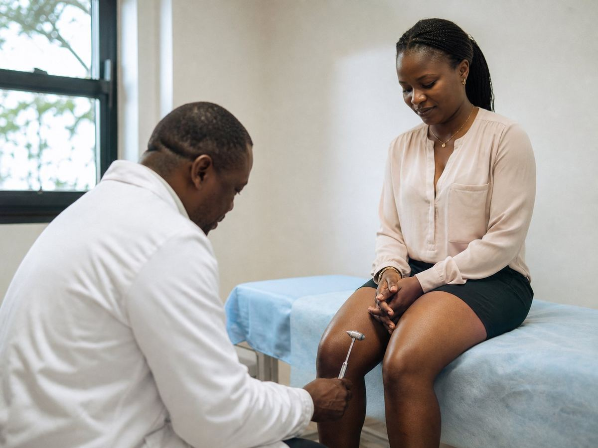
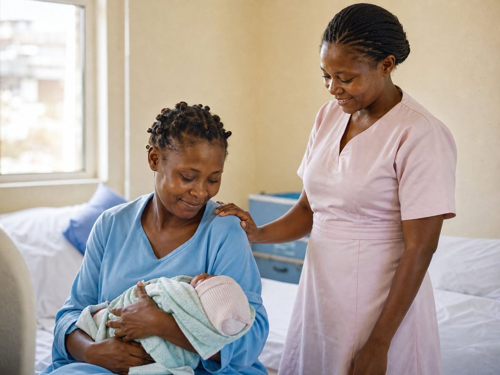
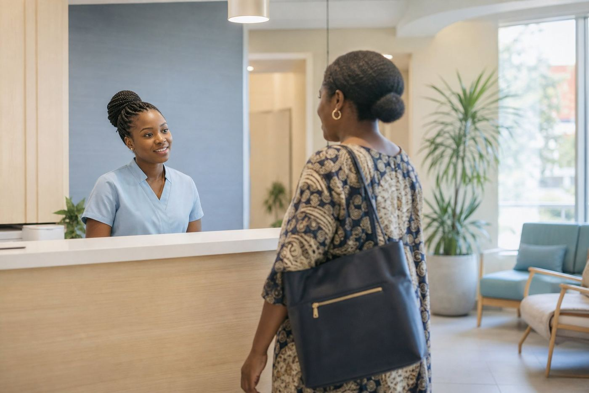

Neurologie, médecine générale, radiologie et échographie sous un même toit. Vous écrivez sur WhatsApp, vous dites ce qui vous amène, et le rendez-vous est confirmé.
Neurology, general medicine, radiology and ultrasound under one roof. You message us on WhatsApp, tell us what you need, and the appointment is confirmed.
Mise en situation. La photo définitive sera prise dans votre centre. Staged scene. The final photo will be taken at your centre.
Le centre reçoit pour les symptômes qui inquiètent et qu'on laisse traîner : maux de tête qui reviennent, vertiges, tremblements, fourmillements, douleurs du dos et de la nuque, suites d'AVC.
The centre sees patients for the symptoms people put off: recurring headaches, dizziness, tremors, numbness, back and neck pain, follow-up after a stroke.

Cette liste décrit ce que la spécialité prend en charge. Elle ne remplace pas un avis médical : le diagnostic se fait en consultation.
This list describes what the specialty covers. It is not medical advice: diagnosis happens in consultation.
Un patient qui doit courir trois adresses pour un examen abandonne en route. Ici, on entre une fois.
A patient sent to three different addresses gives up on the way. Here, you come in once.
Consultation de neurologie sur rendez-vous.
Neurology consultation by appointment.
La consultation d'entrée : ce qui vous amène, examens si besoin, traitement.
The first door: what brings you in, tests if needed, treatment.
Radiographie sur place — pas besoin d'aller ailleurs pour une image.
X-ray on site — no need to go elsewhere for an image.
Examen à l'échographie, y compris le suivi de grossesse.
Ultrasound examination, including pregnancy follow-up.
Suivi gynécologique et suivi de grossesse.
Gynaecological care and pregnancy follow-up.
Mise au monde au centre, avec le suivi qui précède.
Delivery at the centre, with the follow-up that leads to it.
Consultations des nourrissons, enfants et adolescents.
Consultations for infants, children and teenagers.
Interventions chirurgicales au centre.
Surgical procedures at the centre.
Prendre rendez-vous, ou venir avec ce qui vous inquiète.
Book an appointment, or come in with what worries you.

Sur WhatsApp, en une phrase : ce qui vous amène et le jour qui vous arrange.
On WhatsApp, in one line: what brings you in and the day that suits you.
Le service qui vous concerne, et l'heure — pour éviter une salle d'attente pleine.
The right service for you, and the time — so you avoid a full waiting room.
Rue des pavés, à droite du carrefour armée de l'air. On vous attend.
Rue des pavés, right of the air-force roundabout. We expect you.

Sur WhatsApp au +237 694 57 22 77 — dites ce qui vous amène et le jour qui vous arrange. Vous pouvez aussi appeler le même numéro.
On WhatsApp at +237 694 57 22 77 — say what brings you in and the day that suits you. You can also call the same number.
Rue des pavés, à droite du carrefour armée de l'air, à Bonapriso — le repère que tout le monde connaît est l'ancien aéroport.
Rue des pavés, right of the air-force roundabout, in Bonapriso — the landmark everyone knows is the old airport.
Neurologie, médecine générale, radiologie, échographie, gynécologie, pédiatrie, chirurgie, accouchement et consultations — soit neuf services sous un même toit.
Neurology, general medicine, radiology, ultrasound, gynaecology, paediatrics, surgery, delivery and consultations — nine services under one roof.
Oui. Le centre reçoit en français et en anglais, et ce site existe dans les deux langues — le bouton FR | EN est en haut de la page.
Yes. The centre serves patients in French and English, and this site exists in both languages — the FR | EN switch is at the top of the page.